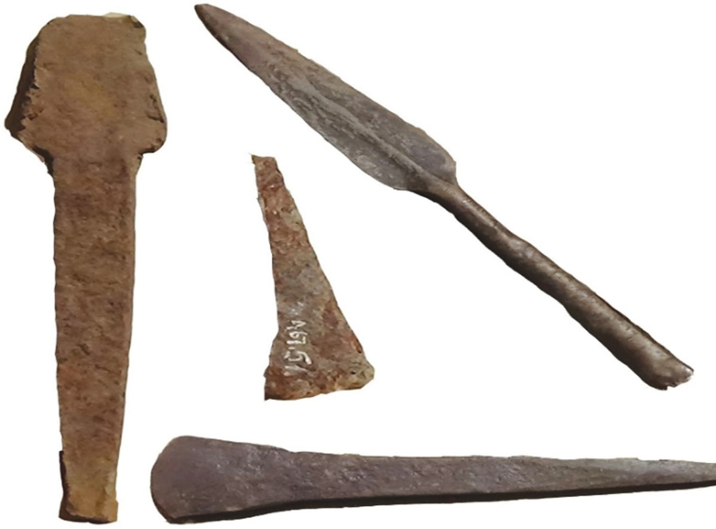

Discovery of iron
It is believed that iron was discovered when human beings were using fire to burn bushes. The fire melted iron ore that was on the surface of the earth. Later on, they discovered that iron ore could be smelted to get pure iron, which could be forged to make iron tools. In addition iron smelting involved changing iron ore into pure iron through heating. Iron forging, meant processing and shaping smelted iron into usable objects such as hoes, axes, knives, machetes, and others as indicated in Figure 2.8.

Iron smelting and forging
The smelting of iron began with the collection of iron ore and charcoal. It also involved constructing furnaces and blowpipes (tuyere) and making bellows. Iron smelting furnaces in African societies were of two basic types. The first type was a bowl-like furnace dug below the ground. The second type was a constructed ground furnace approximately a meter or two meters high.
Iron ore and charcoal were put in the furnace. Then the furnace was lit while air was pumped using the bellows. Air from the bellows entered the furnace through the tuyere. Plenty of remains show that iron smelting and forging were widespread all across Africa. Such remains include furnaces, tuyere, bellows, blooms, slags, anvils, and iron objects.
HISTORY TEXTBOOK FORM ONE.indd 36
06/12/2024 13:09:28